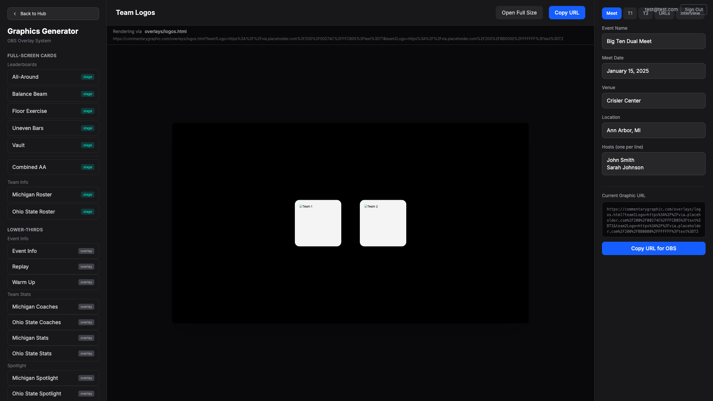

Verification Pass — 2026-04-01
Create categories.json with 6 categories for sidebar organization.
File verified: stage/graphics/categories.json (50 lines)
Build script scaffolding that reads categories and globs manifests.
$ node scripts/buildGraphicsRegistry.js
Building graphics registry...
Loaded categories: full-screen-cards, lower-thirds, full-bleed, video-frames, standalone, event-summary
Found 55 manifest files
Validate required fields, categories, subcategories, and duplicate IDs.
Validating manifests...
All manifests valid.
Emit warnings for themeVars/CSS mismatches without failing build.
=== THEME VARS WARNINGS ===
WARNING: Block 'header-bar': themeVars declares '--meet-logo-url' but it's not used in header-bar.css
WARNING: Block 'header-bar': themeVars declares '--meet-logo-size' but it's not used in header-bar.css
...
Total warnings: 8
Note: Warnings do not fail the build.
Replace hand-written GRAPHICS object with import from generated file.
// Import auto-generated registry data
import { GRAPHICS, CATEGORIES } from './graphicsRegistry.generated';
// Re-export for direct access
export { GRAPHICS, CATEGORIES };
Add renderer routing to sendGraphic() based on registry entry.
import { resolveTheme } from '../lib/themeResolver';
...
const firebaseRenderer = registryEntry && registryEntry.renderer === 'stage' ? 'stage' : 'output';
...
renderer: firebaseRenderer,
...
if (firebaseRenderer === 'stage' && registryEntry) {
const resolvedTheme = await resolveTheme(null, config.meetTheme, graphicId);
...
Refactor sidebar to use CATEGORIES ordering and registry graphics.

What I see: Sidebar shows FULL-SCREEN CARDS (with Leaderboards, Team Info subcategories), LOWER-THIRDS (Event Info, Team Stats, Spotlight), and more. Categories are ordered correctly. Graphics show labels from registry (e.g., "All-Around", "Balance Beam", "Michigan Roster").
Add [stage], [overlay], or [output] badges to each graphic button.
What I see: Each button has a badge on the right edge. Leaderboards show teal "stage" badges. Lower-thirds (Event Info, Replay, Warm Up) show gray "overlay" badges. Colors match spec.
Show "Rendering via stage.html / overlays/{file}.html / output.html" above preview.
What I see: Above the preview iframe, I see "Rendering via overlays/logos.html" in gray text. Below it shows the full URL truncated. The header shows "Team Logos" with Open Full Size and Copy URL buttons.
Add --status flag for detailed migration progress report.
$ node scripts/buildGraphicsRegistry.js --status
╔═══════════════════════════════════════════════════════════════╗
║ RENDERER SYSTEM MIGRATION STATUS ║
╚═══════════════════════════════════════════════════════════════╝
BLOCKS
Progress: [█████░░░░░░░░░░░░░░░] 3/12
✓ header-bar
✓ leaderboard-table
✓ athlete-grid
✗ score-card
...
SKELETONS
Progress: [█████░░░░░░░░░░░░░░░] 1/4
✓ full-screen-card
...
GRAPHICS BY CATEGORY
Overall: [████░░░░░░░░░░░░░░░░] 11/55 migrated to stage engine
Full-Screen Cards: [███████████████] 11/11
Lower-Thirds: [░░░░░░░░░░░░░░░] 0/8
...
SUMMARY
Graphics: 11/55 migrated (20%)
Blocks: 3/12 built (25%)
Skeletons: 1/4 built (25%)
The PRD shows Phase 4 as "NOT STARTED" but all tasks are complete.
| 4 | Tool Integration | ... | NOT STARTED || 4 | Tool Integration | ... | **COMPLETE** — deployed 2026-04-01 |
Written to fixes.md for code loop to address.